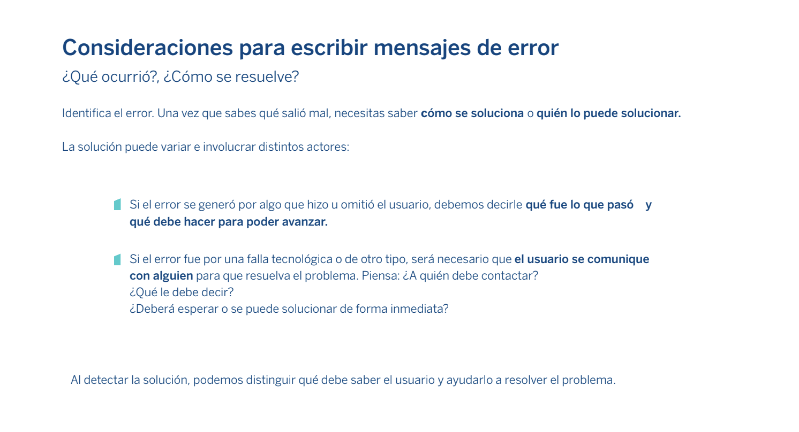

Estudié Comunicación y Periodismo en la UNAM. Trabajé en Milenio Diario durante 5 años creando guiones de radio. Aprendí un poco de programación frontend y colaboré en Ulama, una agencia de desarrollo web que me permitió fortalecer las habilidades técnicas necesarias para iniciar mi carrera en UX, y especializarme posteriormente como diseñadora de contenido. Actualmente formo parte del equipo de Diseño y UX de BBVA México.
Aquí puedes ver mi CV
La Guía para escribir mensajes de error es un material de apoyo diseñado para los colaboradores de BBVA México que deben redactar mensajes de error dirigidos a usuarios o clientes. Explica de forma simple los elementos a considerar antes, durante y después de escribir un mensaje de error.
Contexto
Un mensaje de error poco claro puede arruinar la experiencia durante la navegación en una interfaz digital o aplicación web, ya que produce frustración e incertidumbre a los usuarios al no brindarles información sobre lo que ocurrió o una solución alternativa.
Problema
La poca claridad de estos mensajes generó una gran cantidad de llamadas al centro de atención telefónica de BBVA México. Uno de nuestros hallazgos en la investigación fue el hecho de que la mayoría de estos mensajes de error fueron escritos por el equipo de desarrollo.
Propuesta de solución
Para facilitar a los desarrolladores la redacción de mensajes de error, diseñamos una guía que condensa y explica los elementos a considerar al escribir este tipo de mensajes.
Durante la investigación, comprendimos que para los desarrolladores es importante conservar algunos elementos que les brindan información útil para resolver el problema técnico o proporcionarles otras alternativas a los usuarios.

Fragmento de la Guía para escribir mensajes de error
Evaluación de propuesta con usuarios
Presentamos y compartimos la guía con el equipo de desarrollo y les pedimos que escribieran los mensajes de error de acuerdo con las recomendaciones que se explican en el documento, y comparamos los resultados.
AntesDespués
Master classes
Una de mis responsabilidades en BBVA México es capacitar a través de talleres y sesiones de trabajo a los Scrum Teams que requieran generar alguna pieza de comunicación dirigida a clientes o colaboradores.
Capacitaciones
Diseñamos e impartimos clases de ortografía, redacción y creación de contenido centrado en las personas, donde compartimos los lineamientos de diseño y formato que deben considerarse.
Parte de la capacitación de creación de contenido
Cocreación
Proporcionamos a los equipos los materiales de consulta y las herramientas técnicas necesarias para crear notificaciones push, mensajes SMS, mensajes de error, textos para interfaces digitales, correos electrónicos o cartas.
Acompañamos a los equipos a través de sesiones de cocreación en las que diseñamos los mensajes que requieren y los adaptamos al formato solicitado.
Master Classes
Resultados
Ayudamos a los equipos a cumplir con sus objetivos de comunicación, nos convertimos en embajadores de diseño de contenido dentro de la institución y difundimos buenas prácticas de redacción centrada en las personas.
What's New BBVA México
Cuando se realiza una actualización en la app BBVA México se muestra a los usuarios, antes de su inicio de sesión, un carrusel con información sobre las nuevas funcionalidades y mejoras.
Diseño de mensajes
Aunque estos mensajes pueden parecer simples por su brevedad, son en realidad un reto, ya que debemos generar una secuencia lógica entre las distintas características que se presentan, con textos de una extensión máxima de 80 caracteres.
Diseño de mensajes para What's new BBVA México Propuesta de diseño What's new BBVA México
Creación de mensajes para IVR
Los mensajes de voz automáticos que escuchamos al llamar al centro de atención telefónica de los productos o servicios que utilizamos deben guiarnos y facilitarnos la navegación en de la respuesta de voz interactiva (IVR por sus siglas en ingles).
Contexto
La mayoría de los usuarios que llaman a Línea BBVA lo hacen para resolver dudas acerca de sus cuentas, tarjeta, créditos y levantar o dar seguimiento a alguna aclaración. Un porcentaje importante de estos usuarios son adultos mayores y personas con alguna discapacidad.
Problema
Los usuarios que utilizan el servicio de Línea BBVA lo perciben como complicado, debido a la dificultad de entender las opciones, navegar entre ellas y recibir atención de un asesor telefónico, esto afecta a la reputación de la institución. Además, genera altos costos debido a la larga duración de las llamadas.
Ideación
Cocreación con usuarios
Para entender el contexto y las necesidades de los usuarios, hicimos sesiones de cocreación en las que realizamos ejercicios y dinámicas que nos permitieron identificar las áreas de oportunidad del IVR.
Cocreación con usuarios
Arquitectura de la información
Analizamos la arquitectura del flujo, para generar una propuesta de rediseño con base en nuestros aprendizajes y hallazgos.
Análisis del IVR
Redacción de mensajes
Además de los principios de voz y tono de la identidad verbal de BBVA, para redactar los mensajes consideramos su extensión, ya que no debían exceder de 35 segundos.
Cuando escribimos mensajes para interfaces de voz debemos escucharlos y asegurarnos de que logramos comunicar con claridad lo que buscamos. Para cumplir con este objetivo, es necesario crear patrones que ayuden a los usuarios a retener la información e identificar la opción deseada.